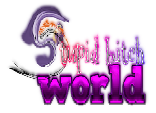

Leading the industry in gorilla-based chat clients.
MarginWORLD
MARGINWORLD IS MEGA EPIC SERVER THAT WILL GET UPDATED MORE SOON. YOU CAN USE THIS SERVER WHILE THWOMPMANWORLD IS BEING DEVELOPED
This is very unfinished right now.FEATURES
- GODMODE IS SAVED IN YOUR COOKIES SO YOU DONT HAVE TO KEEP ENTERING IT
- YOU CAN NOW GROUND AND TELL PEOPLE TO STFU WITH THE CONTEXT MENU
- MODERATORS CAN TURN PEOPLE INTO SCOTTISH BY RIGHT CLICKING A USER AND CLICK SCOTTIFY
- YOU CAN CHANGE YOUR NAME TO AN IMAGE SO YOUR NAME WILL LOOK STYLISH LIKE OTHERS
- BIGGER ALT LIMIT
- EXCLUSIVE COLORS FOR MODERATORS
- /color [color] - Change your Bonzi's color. The colors you can choose.
- /name [name] - Change your display name. 50 characters max.
- /speed [number] - Change TTS speed
- /pitch [number] - Change TTS pitch
- /joke - Tell a random joke
- /fact - Share a random fact
- /backflip - Do a backflip
- /triggered - Get triggered
- /linux - Interject about Linux
- /owo [name] - Owo, wat dis? KILL ME!
- /asshole - Call someone an asshole
- /ground - Ground someone
- /stfu - Tell someone to STFU
- /scottify [targetid] Turn someone into a scottish person. Not added yet
- /kick [targetid] [reason] Kick someone
- /ban [targetid] [reason] Ban someone for a day.
- /nameedit [targetid] [name] Change someone's name. Not added yet